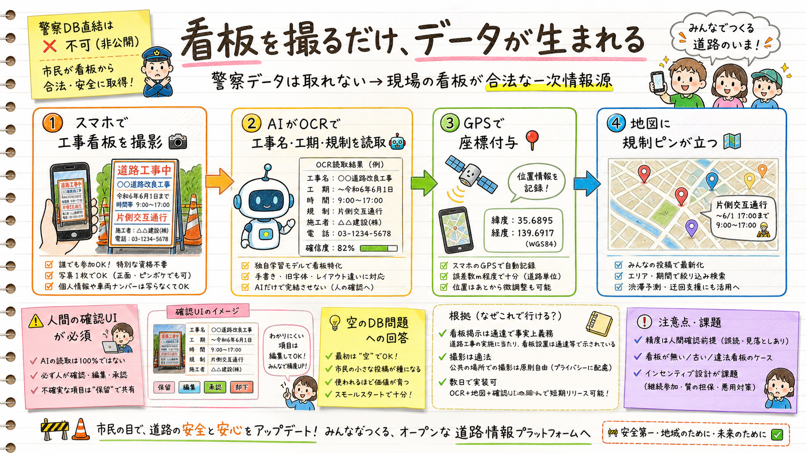

「道路使用許可申請と絡めてデータを取れないか？OCR写真アップは？」の調査結果。行政データ直結ルートは死んでいるが、現場の工事看板を撮影→OCR→GPS付与する市民参加ルートは合法かつ数日で実装可能。「空のDB問題」への回答になる。

| 問い | 結論 |
|---|---|
| 許可申請データを外部から取れるか | ほぼ不可。個票のオープンデータ・APIはゼロ。東京都にあるのは「件数」集計のみ。情報公開請求も粒度・網羅性・鮮度で実用不可 |
| オンライン申請のデジタル化 | 進行中だが芽は薄い。2025年12月に47都道府県でe-Gov統一。ただし外部データ連携を明言した公式文書は無し |
| 工事看板の掲示義務と記載項目 | OCR対象として妥当。情報看板（工事名・工期・作業時間・連絡先・規制内容）は通達（昭37道発372号）が許可条件を介し事実上義務化。レイアウトは自治体・業者でばらつき |
| 撮影の法的問題 | 支障なし。公道の看板撮影は適法（著作権法46条・受忍限度）。注意は業者情報を大量DB化する際の個人情報保護のみ |
| OCR＋LLM構造化の実現性 | 数日で動く[仮説]。LLM visionのJSON schema抽出一発型が最良。手書き・色あせ・逆光で精度低下→人間の確認UI必須 |
意味するもの：これは「空のDB問題」（現場が個人アプリに登録する動機がない）への回答。ゼロから入力させるのではなく、散歩中の保育士・現場作業者・市民が写真1枚撮るだけでデータが生まれる。ほこナビDPの「多様な主体で鮮度高く更新」思想とも一致し、「動的な歩道工事規制×市民参加収集」で差別化がさらに尖る。
「許可申請と絡める」は語り方を変える。
言ってはいけない：「警察の許可データと連携します」→ 制度上不可能なので審査で刺される。正しい語り：「許可を得た工事は現場に看板を掲げる義務がある。その看板こそが分散した一次情報。本サービスは看板の撮影1枚でそれを構造化データに変える。将来、行政のオンライン申請データがオープン化されれば直結できる設計にしておく」— 制度の現実を踏まえた上で先回りする姿勢が伝わる。
| ピッチでの位置づけ | 内容 |
|---|---|
| 現在（MVP） | 看板写真→OCR→確認→地図。市民参加でデータが育つ入口 |
| 正直な線引き | 精度は人間確認前提。verification_statusで未確認/確認済みを区別 |
| 将来ビジョン | e-Gov申請データのオープン化を待ち受ける設計（申請→自動登録）＋車線レベル可視化 |
MVPは12タスク完了・ローカル動作済み。締切7/27まで約3週間。